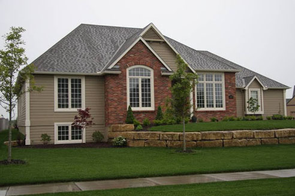
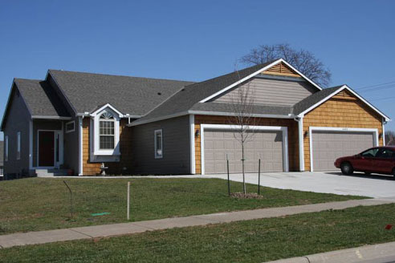

Lawrence, Kansas is a community where home buyers know what they want and expect to find value. Gary Rauckman Builders is a company which gives personal attention to the home buyer and provides beautiful, quality, and affordable homes.
After more than 35 years of building in the Lawrence community, we still enjoy making you proud of your new home. Gary Rauckman Builders looks forward to giving you personal attention from planning to completion so that you will have a positive and enjoyable building experience.
We have the tools to design a home which will fit your unique needs and desires: a home that reflects what is important to you. If you want to design and build your dream home, then contact Gary Rauckman Builders today.
Building
Rentals
Remodeling
What would you like to see in your new home? You have floor plan ideas and details that you have thought about. Now you need an experienced contractor who can bring it all to life.
We offer tours of homes we have constructed, and give you opportunities to visit with our satisfied clients. They will tell you that we are professionals at the business of building homes.
We partner with several design and interior architects who can design exactly what you want. They will direct you along the design path that makes the most sense for your family. We also have time-tested and updated building plans to offer you in specific budget ranges.
We are available to assist you with the financing segment of your new home purchase. We are connected with local financing institutions who care about your needs.
Gary Rauckman Builders also has a number of Townhomes in Lawrence. We are proud of these properties, and work to keep them up-to-date and maintenance free. Gary’s wife Kathy is the general manager; she lists the properties under GK Management. You can contact her at gkrauckman@juno.com for information.
We have a variety of Townhomes to suit your needs. They range from two bedroom, one car garage units all the way to four bedroom and two car garage units. Remember, these are privately owned and managed. There are no management companies to deal with.
Gary and his family have made Lawrence their home for over 40 years, and have seen major growth through those years. Gary graduated from the University of Kansas with a degree in Mechanical Engineering, a background which has been invaluable in the construction industry.
Early on, Gary supervised a large volume home construction business that emphasized quality and affordability. This experience has helped shape what he now accomplishes in custom homes, townhomes, remodeling and small commercial projects.
Over the years, Gary Rauckman Builders has partnered with local contractors who care for and build trust with our clients. We are available to assist you in all aspects of building construction. This may include site plans, floor plans, exterior and interior design, land acquisition, and financing.
We agree with you that your new home is a financial investment to be proud of. Our desire is to serve you with quality craftsmanship in a timely manner. We want the best for you, and we want you to enjoy the building experience.